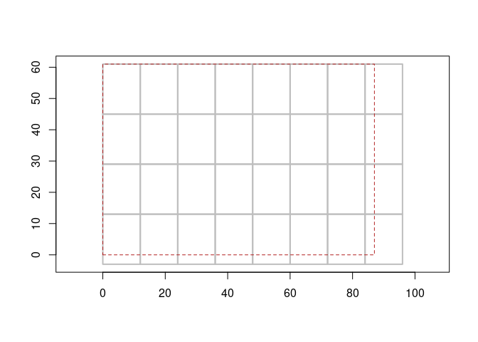

Abstract tiling schemes.
Given a grid, impose a tiling scheme. The dangle is overlap the tiles impose (in pixels).
We use the term “block” to refer to the size of each tile in pixels.
Consider a raster 16 x 12, with 4 x 4 tiling there is no overlap.
library(grout)
r0 <- raster::raster(matrix(0, 12, 16), xmn = 0, xmx = 16, ymn = 0, ymx = 12)
tiles(r0, blockX = 4, blockY = 4)
#> tiles: 4, 3 (x * y = 12)
#> block: 4, 4
#> dangle: 0, 0
#> tile resolution: 4, 4
#> tile extent: 0, 16, 0, 12 (xmin,xmax,ymin,ymax)
#> grain: 1, 1 (4 : x, 4 : y)But, if our raster has an dimension that doesn’t divide neatly into the block size, then there is some tile overlap. This should work for any raster dimension and any arbitrary tile size.
r1 <- raster::raster(matrix(0, 13, 15), xmn = 0, xmx = 15, ymn = 0, ymx = 13)
tiles(r1, 4, 4)
#> tiles: 4, 4 (x * y = 16)
#> block: 4, 4
#> dangle: 1, 3
#> tile resolution: 4, 4
#> tile extent: 0, 16, -3, 13 (xmin,xmax,ymin,ymax)
#> grain: 1, 1 (4 : x, 4 : y)
r <- raster::raster(matrix(1:12, 30, 44), xmn= 0,xmx = 4, ymn = 0, ymx = 3)
(t1 <- tiles(r, blockX = 12, blockY = 12))
#> tiles: 4, 3 (x * y = 12)
#> block: 12, 12
#> dangle: 4, 6
#> tile resolution: 1.090909, 1.2
#> tile extent: 0, 4.363636, -0.6, 3 (xmin,xmax,ymin,ymax)
#> grain: 0.09090909, 0.1 (12 : x, 12 : y)
plot(t1)
(t2 <- tiles(volcano, 12, 16))
#> tiles: 6, 6 (x * y = 36)
#> block: 12, 16
#> dangle: 11, 9
#> tile resolution: 0.1967213, 0.183908
#> tile extent: 0, 1.180328, -0.1034483, 1 (xmin,xmax,ymin,ymax)
#> grain: 0.01639344, 0.01149425 (12 : x, 16 : y)
plot(t2)
We can generate a table of offset indexes, for use in reading from GDAL (say).
tile_index(t2)
#> # A tibble: 36 × 5
#> tile offset_x offset_y ncol nrow
#> <int> <dbl> <dbl> <int> <dbl>
#> 1 1 0 0 12 16
#> 2 2 1 0 12 16
#> 3 3 2 0 12 16
#> 4 4 3 0 12 16
#> 5 5 4 0 12 16
#> 6 6 5 0 11 16
#> 7 7 0 1 12 16
#> 8 8 1 1 12 16
#> 9 9 2 1 12 16
#> 10 10 3 1 12 16
#> # … with 26 more rowsWe can generate polygons from these.
p <- as_polys(t1)
sp::plot(p)
Or just plot the scheme.
plot(t1)
What for?
This gives us fine control over the exact nature of the data we can read from large sources.
Consider this large image online:
u <- "/vsicurl/https://s3-us-west-2.amazonaws.com/planet-disaster-data/hurricane-harvey/SkySat_Freeport_s03_20170831T162740Z3.tif"
im <- raster::brick(u)
im
#> class : RasterBrick
#> dimensions : 27051, 27657, 748149507, 3 (nrow, ncol, ncell, nlayers)
#> resolution : 0.8, 0.8 (x, y)
#> extent : 259537.6, 281663.2, 3195977, 3217618 (xmin, xmax, ymin, ymax)
#> crs : +proj=utm +zone=15 +datum=WGS84 +units=m +no_defs
#> source : SkySat_Freeport_s03_20170831T162740Z3.tif
#> names : R, G, B
#> min values : 0, 0, 0
#> max values : 255, 255, 255The raster reader gives us a useful brick object that can be operated with, if we crop it only those cell values are read - but we have no idea about the underlying tiling of the data source itself.
With GDAL more directly we can find the underlying tile structure, which tells us about the 256x256 tiling scheme.
info <- vapour::vapour_raster_info(u)
info["tilesXY"]
#> $tilesXY
#> [1] 256 256Now with grout we can actually generate the tile scheme and work with it, let’s say we know that we want a region near tile number 6500. Using the raster version of the tiles we can find the adjacent tile cell numbers, then use that to crop the original source.
(tile0 <- tiles(im, info$tilesXY[1], info$tilesXY[2]))
#> tiles: 109, 106 (x * y = 11554)
#> block: 256, 256
#> dangle: 247, 85
#> tile resolution: 204.8, 204.8
#> tile extent: 259537.6, 281860.8, 3195909, 3217618 (xmin,xmax,ymin,ymax)
#> grain: 0.8, 0.8 (256 : x, 256 : y)
polys <- as_polys(tile0)
cells <- raster::adjacent(tile0$tileraster, 6500, include = TRUE, directions = 8)[, "to"]
rr <- raster::crop(im, polys[cells, ])Finally, we have an in-memory raster of the original source data for very specific tiles.
rr
#> class : RasterBrick
#> dimensions : 768, 768, 589824, 3 (nrow, ncol, ncell, nlayers)
#> resolution : 0.8, 0.8 (x, y)
#> extent : 273259.2, 273873.6, 3205125, 3205739 (xmin, xmax, ymin, ymax)
#> crs : +proj=utm +zone=15 +datum=WGS84 +units=m +no_defs
#> source : memory
#> names : R, G, B
#> min values : 25, 28, 2
#> max values : 238, 246, 250
raster::plotRGB(rr)
sp::plot(polys[cells, ], add = TRUE, border = "firebrick")
text(sp::coordinates(polys[cells, ]), lab = cells, col = "yellow")TODO
- remove need for using sp polygons
- set tools for cropping that use the index, not spatial extent (i.e. extent(x, x0, x1, y0, y1))
- remove use of sp and raster internally for the data structures, just store the information about the grid/s
Code of Conduct
Please note that the grout project is released with a Contributor Code of Conduct. By contributing to this project, you agree to abide by its terms.